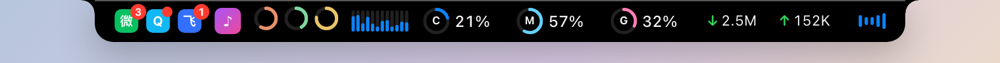
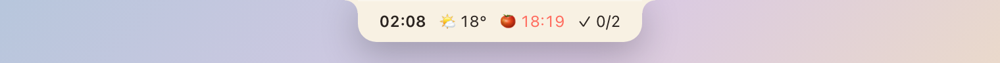
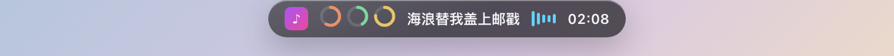
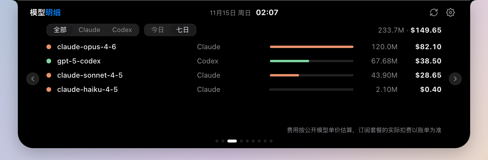
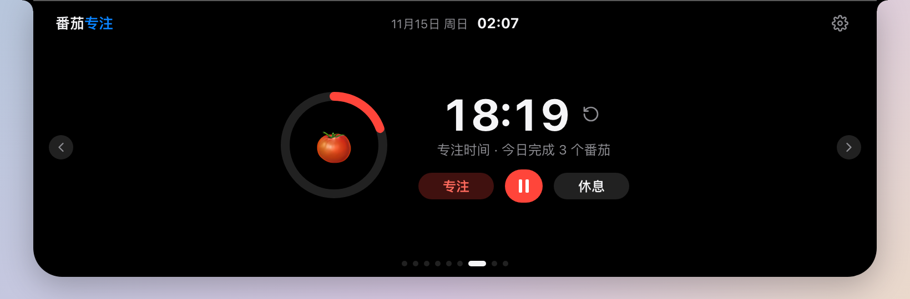
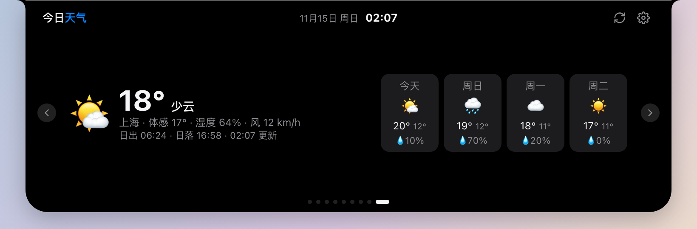
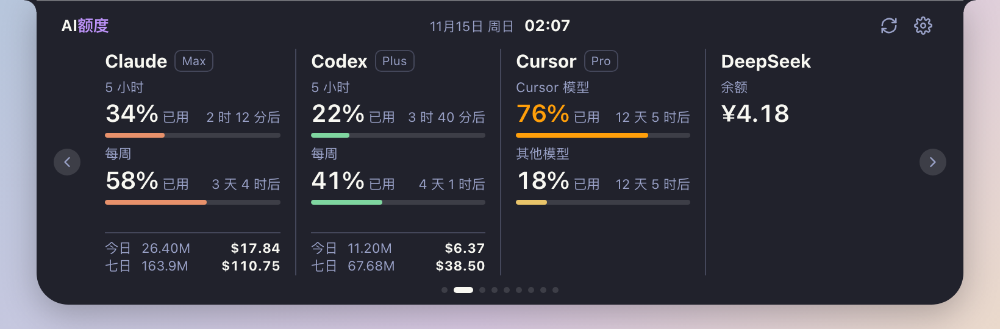
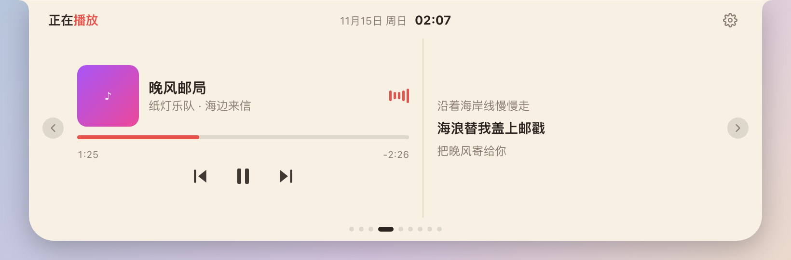
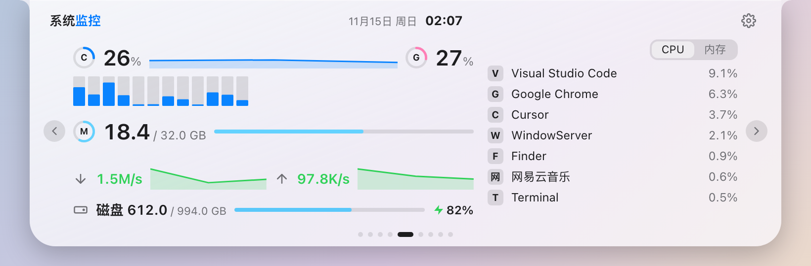
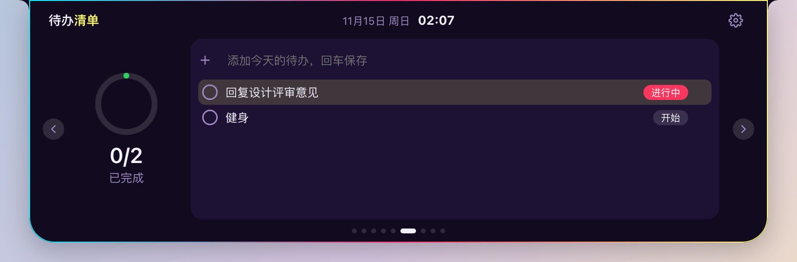

收起时
一眼看到最常用的信息
消息未读、AI 额度环、CPU 核心、内存、GPU、网速、正在播放的歌词……收起内容可以自由挑选和排序，宽度随内容自适应，数字变化时也不会来回跳动。


刘海 · 贴住顶边
胶囊 · 单行歌词 侧边竖向
侧边竖向放在哪都行
拖到哪，就停在哪
- 沿顶边移动，拖离顶边变成悬浮胶囊，拖回去自动吸附。
- 拖到左右边缘，自动变成竖向胶囊，面板从侧边展开。
- 多显示器，直接拖到另一块屏幕；分辨率、缩放不同也能对齐。
- 闲置贴边隐藏，不用时缩成一条细线。
- 全屏自动隐藏，以及只能用快捷键打开的游戏模式。
展开后
九个页面，左右一滑就到
左右箭头、滚轮或键盘切换；页面可以开关和排序，面板边缘拖一拖就能调整大小。
AI 额度
Claude、Codex 的 5 小时与每周额度、重置倒计时；DeepSeek、OpenRouter、Kimi 余额；今日与七日 Token、费用估算。

模型明细
按工具和模型拆开看今天、最近七天各花了多少。

消息提醒
微信、QQ、企业微信、钉钉、飞书有新消息时出现在岛上，点一下切过去。

音乐与歌词
封面、进度、播放控制和同步歌词；收起时也能只留一句歌词。

系统监控
CPU 每核心、GPU、内存、网速曲线、硬盘、电池，以及占用最高的应用。

待办
今天的任务和完成进度，未完成的自动顺延到第二天。

番茄专注
专注与休息交替，收起时显示倒计时，结束时在岛上提醒。

剪贴板
最近复制的文字，点一下重新复制，常用的可以置顶。

天气
实况与未来四天预报，自动定位或手动填城市。
两个平台，各尽所能
不因为一边不支持，就砍掉另一边
同一套界面，底层按平台分别实现，用上各自系统能提供的能力。
| 功能 | macOS | Windows |
|---|---|---|
| 消息提醒 | Dock 图标未读数 | 任务栏闪烁 + 系统通知中心 |
| 正在播放 | Spotify、Apple Music | 系统媒体会话：网易云、QQ 音乐、酷狗、Spotify、浏览器等 |
| GPU 占用 | IOAccelerator | PDH 性能计数器 |
| 全屏隐藏 | 不进入全屏应用的空间 | 检测前台全屏窗口 |
| 系统代理 | 系统网络设置 | Internet 设置 |
| 密钥存储 | 钥匙串 | 凭据管理器 |
外观
九款皮肤，外加你的配色
经典黑、奶油、毛玻璃浅 / 深、One Dark Pro、Dracula、Night Owl、GitHub Light、赛博朋克，或者自己调。




隐私
数据留在你的电脑上
- 不读聊天内容：只看未读数、任务栏闪烁，以及你允许的系统通知。
- 密钥进钥匙串：API Key 存在系统钥匙串 / 凭据管理器，不写进配置文件。
- 不改你的登录：Claude 令牌只在内存里用来读额度，不续期、不写盘。
- 联网只为必要的事：额度、歌词（LRCLIB）、天气（Open-Meteo）。

现在就试试
从 GitHub Releases 下载对应平台的安装包。
应用尚未签名：macOS 首次打开请右键 › 打开；Windows 出现「已保护你的电脑」时点「更多信息 › 仍要运行」。
git clone https://github.com/fangkyi03/notchdeck.git cd notchdeck && npm install npm run tauri dev